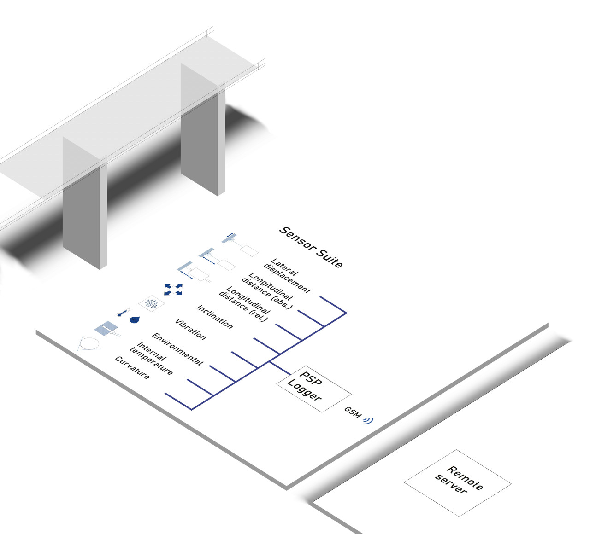
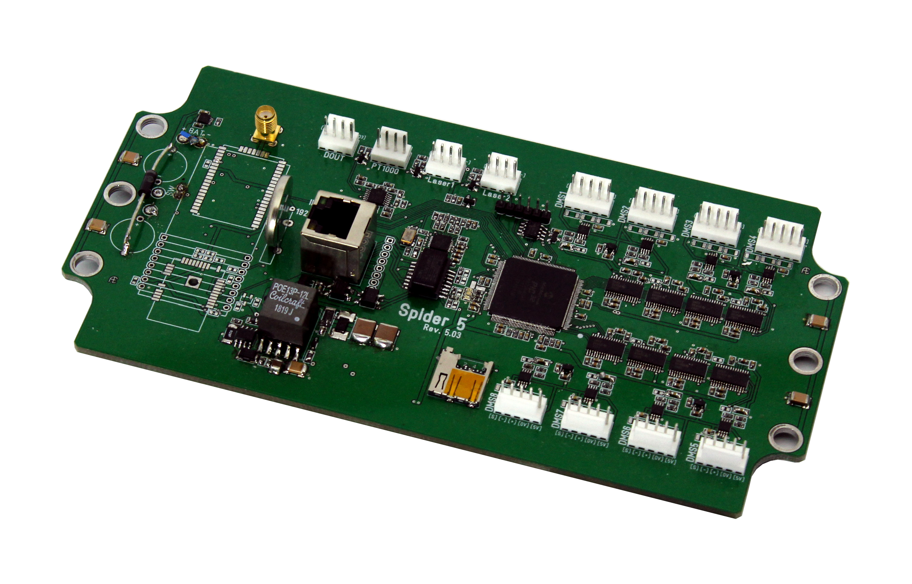

iSHM: Monitoring Structural Health
Keywords: Structural health monitoring, bridge maintenance, infrastructure management
.
Why monitor?
Any large structure is subject to forces that will cause it to deviate from its original design. As a structure ages, components such as bearings will fail, cable stays will weaken and the cumulative effects of cyclic or exceptional loads will reduce the structure’s resistance. Over its lifetime the structure must also cope with geological processes, such as settling of the foundations, soil pressure, slippage and erosion. These processes set up a series of forces on the bridge that will cause structural members to bend, change orientation, and shift position relative to one another.
Physical inspections of a bridge will detect these problems before they become a safety issue. However, full inspections are mandated every 6 years and a fault may not be noticed until is well advanced—and expensive to rectify. Even the most thorough physical inspection only provides a snapshot of a bridge’s condition. Transitory or intermittent faults will inevitably be missed; subtle changes that are part of a long-term trend, can all too easily be dismissed as measurement errors. Nor can daily or seasonal patterns be accounted for. Our monitoring systems observe the bridge at hourly or daily intervals. For exceptional events, they can measure at up to 500Hz. Our clients can access up to date bridge data from their own workstation, receive reports (typically every six months) and, if there are significant changes in the condition of their bridge, they receive an immediate alert.
Ultimately, our systems are designed to help engineers make informed decisions. Engineers and bridge managers must decide when maintenance is conducted, whether a bridge’s lifetime can be extended or whether a fault will be sufficiently serious to require rectification. All of these decisions are based on predictions of the bridge’s future state. The predictions are, in turn, extrapolations from the most recent survey—which may have taken place years before. By measuring the current state of the bridge, our iSHM systems reduce the uncertainty associated with these decisions.
When is iSHM used?
An iSHM system can be used in a number of contexts:
• Monitoring known faults—if a non-critical fault has been detected during a physical examination, monitoring its effect on the geometry of the bridge allows an informed decision to be made about the necessity and scheduling of repairs.
• Bridges nearing the end of their life—a bridge’s design lifetime is a conservative estimate—the majority of bridges are taken out of service prematurely—this has economic and environmental consequences.
An SHM system allows engineers to assess the status of a bridge and take corrective actions.
With the appropriate information engineers can make decisions about extending the working life of the bridge.
• Checking healthy bridges—our systems represent an investment in the future of the bridge.
By closely observing the geometry of the bridge, component failures and geological effects are detected early—and can be rectified either during planned maintenance with minimum disruption or with early intervention before the significant damage is inflicted.
The iSHM System
 The technical challenge for a bridge logging system is to measure small changes over long periods; and to do so in a harsh physical environment with little infrastructure. PSP systems are a collaboration between experienced electrical and structural engineers—they measure structurally meaningful data in a precise and stable way. Our structural monitoring system has three components: an ensemble of sensors tailored to the structure; an on-site logger that interrogates the sensors and a remote server that analyses data and presents results on a web page.
Sensors
The iSHM system is designed to operate with a wide range of sensors, both proprietary and third party; and is compatible with both current loop and Modbus standards. The choice of sensors varies with bridge and application. We offer sensors to measure geometric deviations in the bridge: deflection, displacement and inclination of the structural members. We also have sensors to measure vibration, the internal temperature of the bridge, air temperature and relative humidity. Other sensors are available on request.
Smart Logger
 The smart logger can measure up to 8 channels using a high precision 32 bit ADC and has 2 current loop channels. In addition, there is also a bus system than can measure up to 10 nodes. The sampling pattern is programmable: measurements can be taken at intervals ranging from 10s to 24 hours. Detailed snapshots of unusual events can be taken using short bursts of measurements at frequencies of up to 2kHz.
Because the logger must operate from a battery, special attention was paid to power consumption during design. Since the GSM component consumes most power, the logger will cache the measurements on its own removable storage and will only transmit data if it has sufficient reserves in its battery. This means that data transmission will be delayed until the solar cell has been able to charge the battery to the required level. Housed with a steel IP65 case, the logger is robust and reliable. Once installed, the logger typically runs six months without human intervention.
Remote Server
Data received by the remote server is archived, analysed and presented to the user. Data is archived in a secure SQL database. Regression and time series models are used account for temperature and to resolve meaningful data from background trends, such as daily or season temperature variation. The processed data is presented to users with an easy to use web page, it can also be relayed to the user in Excel files. The remote server is also able to re-configure the logger during the communication window.
Why choose iSHM ?
• Specially designed, proprietary sensors and electronics.
• Flexible: sensor ensemble is tailored for each bridge.
• Self-powered, only requires mobile telephone coverage.
• Sophisticated analysis algorithms, up to date results presented on secure webpage.
How is iSHM used in practice?
Our SHM systems are usually leased for two years. Installation is carried out by PSP and generally takes less than a day. PSP is responsible for maintaining the system. Clients have access to up-to-date data via a password protected webpage. The data can be viewed graphically on the website or the raw data can be downloaded by the clients for their own analysis.